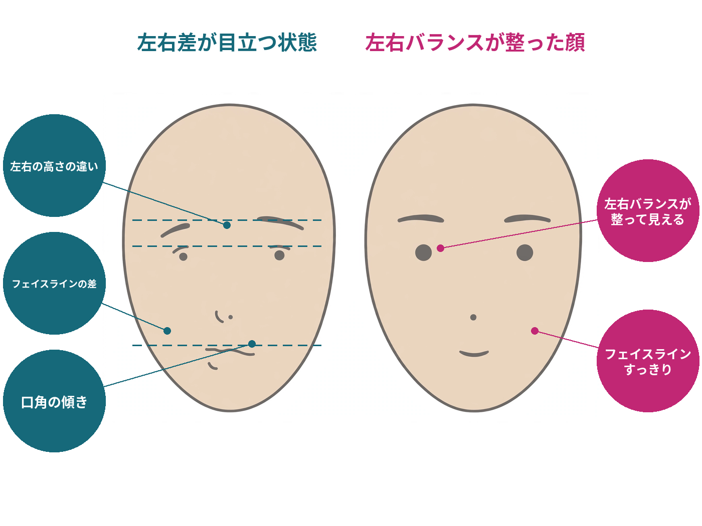

顔の歪み・左右差
美容整体ステラ・ポラリス東三国｜大阪市淀川区東三国・東三国駅徒歩5分・女性向け

噛み合わせと首の骨の関係から見る整体
顔の左右差は、骨格そのものだけでなく、片側で噛む習慣や頬杖、バッグをいつも同じ肩にかけるなど、日常のクセの積み重ねが関係していると言われています。首の骨の上には頭蓋骨が乗り、顎の動きとも連動するため、首まわりの緊張が顔のバランス感に影響することもあります。写真に写った自分の顔を見て、左右の違いが気になり始めたという方も多いお悩みです。このページでは、顔の左右差の背景にある仕組みと、顔全体が整ったような印象を目指す当サロンでのケア、ご自宅でできるセルフケアをご案内します。まずは下のチェックで、ご自身の状態を確かめてみてください。
ご予約はこちら（Coubic）こんなお悩みありませんか
- 証明写真や自撮りを見て、顔の左右差が気になる
- 食事のとき、いつも同じ側で噛んでいる気がする
- 頬杖をつくクセがある
- バッグをいつも同じ肩にかけている
- 片側のエラだけが張っているように感じる
- 笑ったときの口角の高さが、左右で違う気がする
- 首や肩のコリにも、左右差を感じる
当てはまる項目が多いほど、日常のクセが顔まわりの筋肉の使い方に偏りをつくっている目安とされています。顔の印象は、顔だけではなく首や肩を含めたバランスで決まる部分も大きいものです。次のセルフチェックで、今の顔のバランスの傾向を確かめてみましょう。
簡単セルフチェック（鏡でのバランスチェック）
鏡の前でできる、顔のバランスの傾向を知るための簡単な方法です。
- 鏡の前にまっすぐ立ち、顔の中心に縦の線をイメージして、両目の高さ・眉の高さ・口角の位置を左右で比べます。
- 次に、ゆっくり口を開け閉めして、顎の動きに左右のブレがないかを確認します。
- 目の高さや口角の位置に違いを感じる、顎がまっすぐ開きにくい場合は、噛む筋肉や首まわりの緊張に偏りがある目安と言われています。
※これは診断ではありません。ご自身の状態の傾向を知る目安としてお使いください。
顔の歪み・左右差の原因と仕組み
日常のクセの積み重ね
顔の左右差の背景には、生まれつきの骨格だけでなく、毎日の何気ないクセが関係していると言われています。片側だけで噛む、頬杖をつく、同じ肩にバッグをかける、横向きで寝る、足を組む――こうした習慣は、顔や首まわりの筋肉の使い方に偏りをつくり、少しずつバランス感に影響していきます。図1のように、顔の印象は顔まわりの筋肉だけでなく、土台である首や肩の状態ともつながっています。

図1 顔の左右差で起こりやすい変化と、バランスが整った顔のイメージ。顔の状態には個人差があります。
噛む筋肉の左右差
噛むときに働く咬筋や側頭筋は、使う側ほど発達し、こわばりやすい筋肉です。片側噛みのクセがあると、よく使う側のエラが張って見えたり、反対側との張りの差が目立ったりすることがあります。噛む筋肉の緊張は、顎の動きや顔全体のバランス感にも関わるため、顔のケアでは顎まわりをゆるめることも大切なポイントになります。
首と頭の位置との連動
頭蓋骨は首の骨の上にのっており、顎の関節の動きとも連動しています。首が傾いていたり、頭の位置が左右どちらかに偏っていたりすると、顔の見え方にも影響することがあります。顔だけをケアしても戻りやすいと感じる方は、土台である首や肩のバランスが関係している場合があります。顔と首は、切り離して考えにくい関係にあるのです。
骨格そのものとの違いを知る
人の顔は、もともと完全に左右対称ではないのが普通です。大切なのは、骨格そのものを変えようとすることではなく、筋肉の緊張や姿勢のクセによって強まって見える左右差を、ゆるめて整えていくという考え方です。緊張がゆるんでバランスが整うと、顔全体がすっきりと整ったような印象に近づきます。感じ方には個人差がありますが、まずはクセに気づくことが第一歩です。
セルフケアで足りる場合・サロンケアが向く場合
クセに心当たりがあり、噛み方や姿勢を意識し始めた段階で違和感が軽い場合は、まずご自宅でのクセの見直しとセルフケアを続けて様子を見る方法があります。一方で、噛む筋肉のこわばりが自分ではゆるめにくい、顔だけでなく首や肩のバランスから整えたい、写真に写る印象を変えていきたいという場合は、サロンでのケアが向いている目安になります。サロンでは、顔まわりだけでなく首・肩・頭まわり全体のバランスを確認しながらケアすることで、施術後に「顔が整った感じがする」「表情が動かしやすい」と感じやすい状態を目指します。どちらが正解というものではなく、今の状態に合わせて選ぶことが大切です。
当サロンでのケア
当サロンの顔の左右差ケアは、「顔まわりの緊張をゆるめ、土台からバランスを整える」ことを目指す組み立てです。顔だけを施術するのではなく、首・肩・頭まわり全体を確認し、部位と目的に合わせて3つの手技を組み合わせます。
美容整体：首のラインと頭の位置を整え、顔の土台となるバランスをつくることを目的に。姿勢のクセも含めて確認しながら進めます。
アロマオイルマッサージ：首・肩・デコルテまわりの緊張をオイルでゆるめ、顔まわりへの巡りが流れやすい状態を目指します。香りに包まれるリラックス感の高いケアです。
もみほぐし：噛む筋肉やこめかみまわりをやさしい圧で丁寧にゆるめ、こわばりをほぐすことを目的に進めます。力の抜けた状態を感じていただくことを大切にします。
ケアを通して目指すのは、こんな変化です。
- 顔全体が整ったような、すっきりした印象へ
- 噛む筋肉のこわばりがゆるんで、表情が動かしやすい感覚へ
- 片側のエラの張り感がやわらいで見える印象へ
- 首のラインが整って、顔まわりが軽く感じられる状態へ
- 写真に写る自分の印象が楽しみになるような仕上がりへ
施術の前後では鏡を一緒に確認しながら、感覚の変化を共有します。「顔全体が整ったような印象」と「表情の動かしやすさ」を目指し、日常で気をつけたい噛み癖や姿勢のクセについてもご案内します。クセは毎日の積み重ねだからこそ、気づいて見直すきっかけづくりを大切にしています。

施術の流れ
ご来店後、気になる部位やお悩み、ご希望の強さなどをうかがいます。完全個室のため、周りを気にせずお話しいただけます。
顔まわりの緊張や首・肩のバランス、姿勢のクセなどを一緒に確認し、その日の状態に合わせた施術の進め方をご案内します。
美容整体を中心に、ご希望に応じてアロマオイルマッサージ、もみほぐしを組み合わせて進めます。強さは途中でも調整できます。
施術後の状態を確認し、ご自宅で続けやすいセルフケアのポイントをお伝えします。次回の目安についても、ご希望があればご案内します。
料金
| コース | 通常価格 | キャンペーン価格（12/25まで） |
|---|---|---|
| 80分 | 8,000円 | 3,000円 |
| 100分 | 10,000円 | 4,000円 |
| 120分 | 12,000円 | 5,000円 |
クリスマスキャンペーンは12月25日まで、ご新規様もリピーターの方も対象です。施術内容は当日の状態とご希望に合わせて組み立てます。
ご自宅でできるセルフケア
- 両側で噛む意識：食事のとき、左右均等に噛うことを意識します。まずは1日1食から、噛む側を途中で替える習慣をつけるのが目安です。
- 頬杖の見直し：頬杖に気づいたら手を下ろし、姿勢をまっすぐに整え直します。デスクにメモを貼るなど、気づくきっかけをつくるのがおすすめです。
- バッグの持ち替え：バッグをかける肩を日替わりで替える、リュックを使うなど、片側だけに負担がかからない工夫を取り入れます。
- 顎まわりのストレッチ：口をゆっくり大きく開け閉めする動きを5回、朝と夜に行います。痛みのない範囲で、力を抜いて行ってください。
ご自宅でのケアに：セルフケア資料ライブラリ（無料）
このお悩みに合わせたセルフケアの考え方を、無料の資料ライブラリでご紹介しています。
セルフケア資料ライブラリを開く →
受診の目安
顎の関節の痛みや、口が開きにくい症状がある場合は、施術の前に歯科や医療機関への相談をおすすめします。また、顔のしびれや動かしにくさが急に出た場合は、すぐに医療機関を受診してください。
よくある質問
Q. 初めてでも大丈夫ですか？
はい。当サロンは完全予約制・完全個室で、1日3組までのご案内です。最初にカウンセリングで気になる部位や日常のクセをうかがい、無理のない内容から始めます。施術の前後で鏡を一緒に確認しながら「顔が整った感じがする」「表情が動かしやすい」といった感覚の違いを確かめますので、初めての方も安心してご利用いただけます。
Q. 施術は痛いですか？
強さは、ご希望をうかがいながら調整します。顔まわりはデリケートなため、やさしい圧を基本に、噛む筋肉のこわばりを丁寧にゆるめていきます。感じ方には個人差がありますので、施術中も遠慮なくお声がけください。
Q. コースはどう選べばいいですか？
80分・100分・120分のコースがあり、ケアしたい部位の広さやお時間のご都合に合わせて選べます。顔のバランスのケアで顔まわりから首・肩、頭まわりまでゆっくり整えたい方には、100分が選ばれることが多いコースです。迷われる場合は、ご予約の際にお気軽にご相談ください。
Q. 場所と予約方法を教えてください。
大阪市淀川区東三国、東三国駅から徒歩5分です。完全予約制のため、予約サイト（Coubic）またはLINE公式アカウントからご予約をお願いしています。
Q. 男性も受けられますか？
当サロンは女性向けのため、男性の方は、同じ東三国の男性専用整体院「北辰堂」をご案内しています。
施術者について
平賀建人（施術歴30年）
鍼灸師・登録販売者・アロマセラピスト・パーソナルトレーナーの資格を持ち、美容整体を中心に、アロマオイルマッサージ、もみほぐしを、その日の状態とご希望に合わせて組み合わせて施術します。このページの内容は、施術者の知識と経験をもとに作成しています。

料金・ご予約
ご新規様もリピーターの方も 12/25まで
80分 3,000円／100分 4,000円／120分 5,000円
通常価格は80分8,000円／100分10,000円／120分12,000円です。施術内容はご希望に合わせて組み立てます。
営業時間：月〜土 17:00〜23:00／日 10:00〜23:00（完全予約制）｜電話：080-2468-3086
大阪府大阪市淀川区東三国2丁目25番4号101（東三国駅徒歩5分）